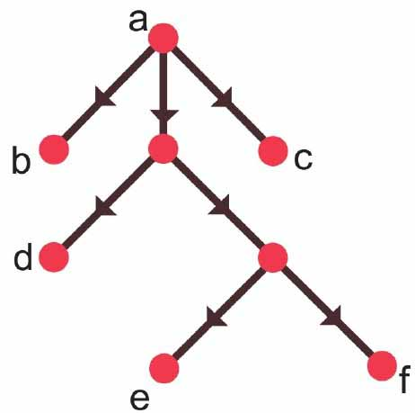
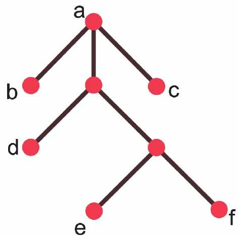
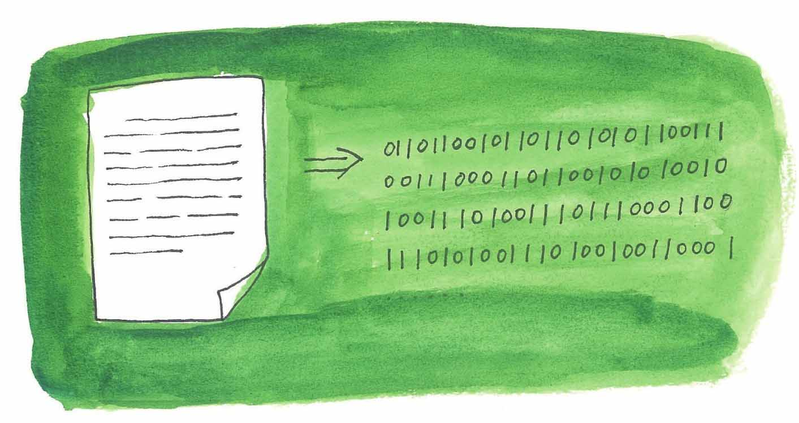
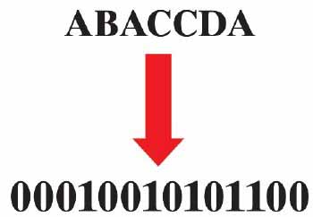
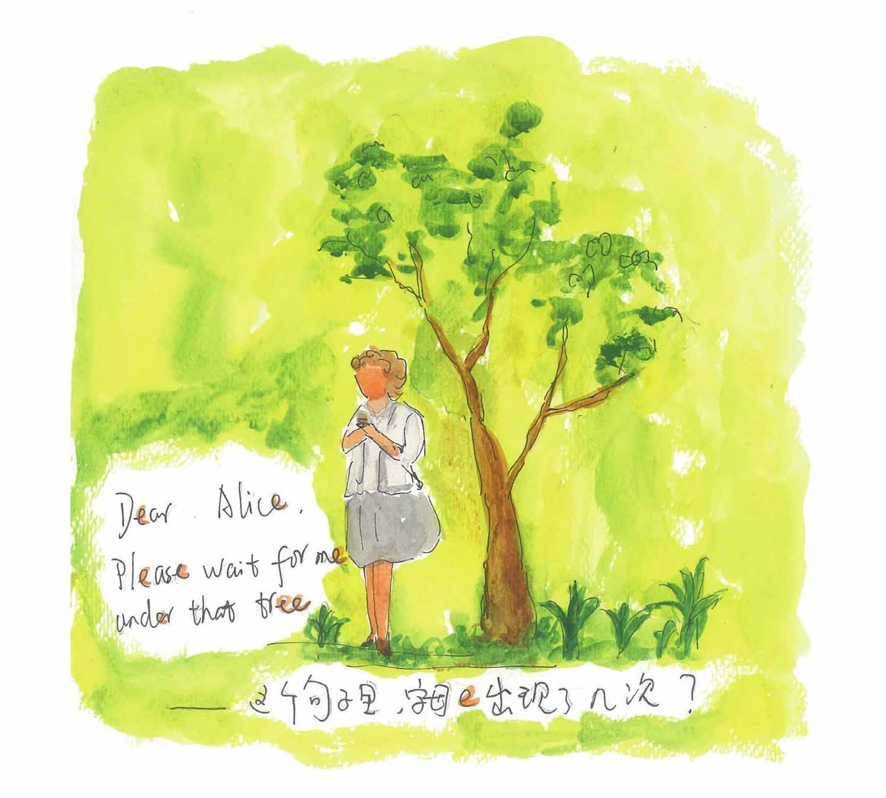
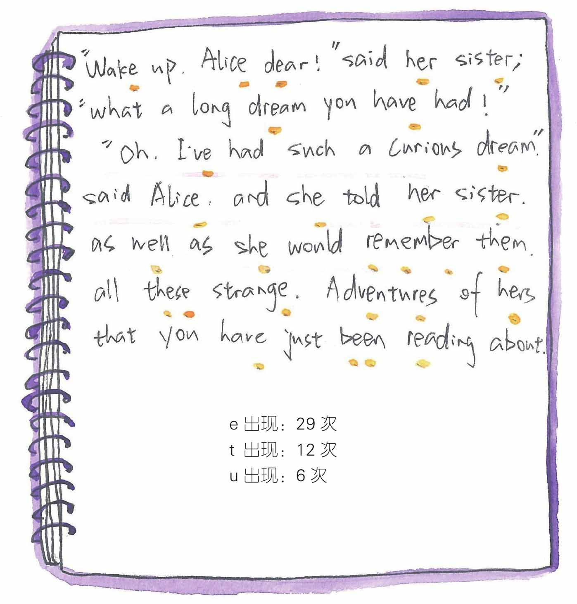
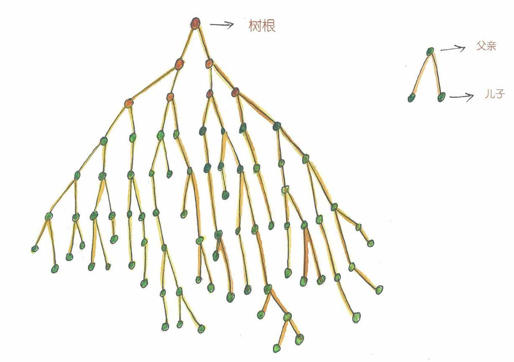
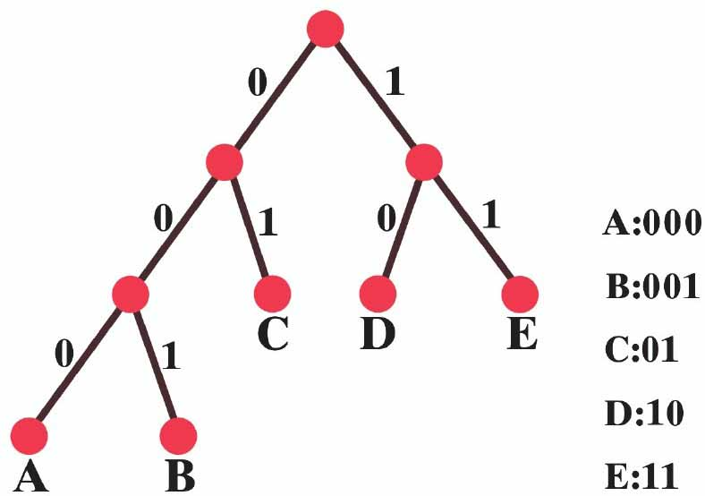

母女两人吃完饭待在阳台上，天已经慢慢黑下来了，天边的晚霞十分夺目，夜光风筝在天上闪烁着。
“数学家、科学家跟诗人一样，也是需要灵感的。乔治·布尔曾告诉他的妻子，在他17岁步行穿过一片田野时，他‘突然想到’：‘除了从直接观察中得到知识，人还可以从某种不确定的、不可见的源泉中获得知识。’可以猜想，布尔想出布尔代数的时候应该是产生了灵感的。”妈妈一边给她养的花花草草浇水一边说。
“哈密顿发现四元数应该也算一个吧。”
“嗯，哈夫曼想到哈夫曼树可能也算一个。”
“什么，哈夫曼树，也是一种树吗？”
“对，哈夫曼树是一种特殊的树——根树——就像自然界普通的树一样，根树有个像‘树根’一样的‘根’结点，其他的边和结点就像是从这个根结点发芽长出来的一样。因此，这个根结点的入度为0。其余的结点入度均为1。其中入度为1、出度为0的结点是这棵树生长的‘树叶’，树叶之外的点我们一般统称为树的‘分支点’。我们在画根树的时候，喜欢将树根画在最上方，这样边的方向就会统一向下或斜着向下，但很多时候，我们会将边上表示方向的箭头省略掉。

一棵“根树”，a点是“根”，b、c、d、e、f是“树叶”

省略箭头后的根树
“哈夫曼树是根树的一种，哈夫曼树主要用于优化数据的传输编码，也就是说我们在网络中不仅要把数据送到应该到达的地方，还应该尽可能地用最省力的方法送到。”
“这个方法是哈夫曼想出来的吗？”
“哈夫曼设计了一种哈夫曼编码来解决这个问题，而哈夫曼编码可以通过哈夫曼树来构造。先说说哈夫曼（David A.Huffman）这个人吧。哈夫曼19岁获得学士学位，然后在美国海军服役，成为当时最年轻的雷达维护官。哈夫曼的舰长对他要求很严苛，不过他非常幸运，战争不久就结束了。两年后，他离开部队又开始读书，获得硕士学位，之后进入麻省理工学院攻读博士研究生，为完成学位论文，他选择的题目是‘最小编码’。”
“最小编码？如果你不举例子我可听不懂！”
“不急呀，我慢慢解释，在数据通信中，需要将传送的文字转换成二进制的字符串。”妈妈一边不紧不慢地说着，一边在一张纸上比画着。

“最简单的编码方式是采用等长编码，也就是说每个字母分配等长的位串。比如设定下面的编码规则，A、B、C、D每个字母分配两个比特：比如00表示A，01表示B，10表示C，11表示D。如果需要传送信息，嗯，比如是ABACCDA，对应的编码就是00010010101100，如此这般发送出去。”

“明白了！”
“接收方按编码规则进行解码就可以了。这种等长编码的方法看起来不错，但效率是不是够高呢？”
“效率？”
“对，效率，就是单位时间里能干多少事。小文，问你一个问题，你是否注意到，不同的字母使用的频繁程度是不同的。”

“嗯，好像是的，那本牛津字典Z打头的字母就很少。”
“很好，你注意到了，有些字母的使用频率远远高于另一些字母。人们很早就发现，26个字母中，字母E出现的频率最高，有些次之，比如T、I、N、O等，有些字母出现的频率是很低的，像你刚才说的Z，还有J、X等。”
“哦，这样啊。”

“为了在单位时间传输更多的信息量，可以用较短的编码去表示那些使用频繁高的字母。也就是设计编码时，让使用频率高的字母用短码，使用频率低的字母用长码，以优化整个报文编码。”
“我有点明白了，比如字母E就用短的编码，Z这样用得少的字母用长的编码。”
“就是这样，用不同长度的编码序列来表示字母似乎是一个提高传输效率的好方法，不过又会有另一个问题，我来举个例子，比如我们这样编码：00表示A，001表示B，01表示C，11表示D，1表示E，怎么样，没问题吧。”
“没问题。”
“对于发送方安娜来说，如果需要传送信息BEE，对应的编码就是00111。”
“没错，有什么问题吗？”
“问题来了啊。接收方是汤姆，汤姆接收到00111一分析，他想，可能是ADE，00 11 1。”
“没错。”
“是没错，但汤姆再看看，他觉得还可能是BD，001 11。”
“这个……”
“汤姆这个人很谨慎，他再一看，还可能是AEEE——00 1 1 1。”
“然后汤姆晕了！”
“是的，如此说来，我们面临两个问题要解决，一是提高传输效率，二是编码不能产生歧义！”
“眼看就要解决了，又出现这个问题，你忘了说哈夫曼的树了。”
“马上就说到了，这些都是年轻的哈夫曼思考的问题。提交论文的期限一天天逼近，哈夫曼还没有想出个头绪。一天，哈夫曼正在冥思苦想中，在纸上写写画画，百无聊赖中，他一把将正在写画的稿子揉成一团，向垃圾桶扔去，就在这个时候，灵感产生了，这就是后来著名的哈夫曼树和哈夫曼编码。”
“树和编码也能扯上关系？”
“听我慢慢道来，假如我有A、B、C、D、E五个字符，根据字母出现的频率给出字母的权重，比如分别为1、2、3、4、5。”
“字母出现得越频繁，所占的权重就越大？”
“正确，哈夫曼构造了一棵二叉树——所谓二叉树就是一棵根树的每个分支点最多有两个‘儿子’——也就是说从树根算起，树的分支不能超过2。”

二叉树——树的分支不能超过2
“明白了！”
“在我们刚才举的例子中，这棵二叉树上将悬挂5片叶子，这5片叶子代表A、B、C、D、E这5个字母。我来画一个，就像这样，你看，有的树叶距离树根远，有的距离树根近，每片叶子到树根的通路长度叫该树叶的层数。把每片树叶的权值乘上各自的层数，再求和，就得到这整棵树的权值，哈夫曼算法将保证这个权值是最小的。”
“妈妈，请再解释一下好吗？”
“就是说可以挂5片树叶的二叉树可能很多，但哈夫曼树是这些树中权值最小的。”
“这跟编码还没扯上关系呢！”
“不急，我们把这棵权值最小的哈夫曼树进行一个编码处理——每个分支左边标上0，右边标上1，这样编码就出来了，A、B、C、D、E的编码分别是000、001、01、10、11。”

“等等，怎么才能得到这棵哈夫曼树呢？”
“哈夫曼树的生成算法也属于贪心算法，原理上跟最小生成树算法很相似，具体的你去看讲义，我不能把什么都讲完，自己领会很重要！”
“好吧。把编码跟树扯上关系，这个构想很……怎么说，很神奇！”
“珀尔曼博士的那句诗‘没有哪幅图画比得上树更迷人’，大概也是想表达这个意思吧。树的神奇之处还有很多，你以后再慢慢体会吧。”
“你说是哈夫曼发现了哈夫曼树，还是哈夫曼创造了这棵树？”
“这个，就好像是在问，人们是发现了素数，还是创造了素数？”
“咳，这个问题太大了，换个话题。说起来这个‘离散数学’大厦啊，给人感觉像是男人们修建的。”
“什么意思？”
“你书柜里有本书《失落与寻回：为什么没有伟大的女性艺术家》，这个书名是不是可以换一下，把女性艺术家换成女性数学家——你介绍的数学家基本上全是男的。”
“这个，嗯，也不都是男的吧，我可没注意到这个问题啊！”
“你没注意到吧，我注意到了。”
“看这样解释行不行，一般来说，天才的数学家也需要受到良好的、正规的教育，比如欧拉、哈密顿、凯莱，这些人的学习条件，妇女是不具备的——那个时候大学不收女的。所以说，20世纪之前一名女性要成为一个比较成功的数学家，至少得具备这样几个条件，嗯，我想想……一是父母或丈夫的支持，二是艰难的自学，像索菲·热尔曼（Sophie Germain，1776—1831）、柯瓦列夫斯卡娅（Sofia Vasilievna Kovalevskaya，1850—1891）都是这样的例子。”
“她们是？”
“她们都是18至19世纪杰出的数学家。但完全靠自学而没有人指点，显然也是不靠谱的，她们两个比较幸运，成功之前都遇到了一些数学高人的帮助，具体细节你自己上网去查查。”
“好的。”
“一直到20世纪初，大学讲台仍然排斥有才华的女数学家，据说希尔伯特为这件事曾拍案而起，提醒那些保守的老学究们，大学是学校不是澡堂子！”
“哈哈，真的吗？”
“哦，我想起来了，有一位女士，她的私人数学老师就是发现德·摩根律的数学家德·摩根，她的名字可能在数学史上不常见，但在计算机领域是载入史册的，她是世界上最早的‘码农’，她的名字叫艾达·洛夫莱斯（Ada Lovelace，1815—1852）。20世纪70年代，美国国防部花了近20年的时间研发出一种计算机通用程序设计语言，他们将这种语言命名为Ada语言，就是为了纪念这位女士。”
“真没想到最早的程序员是一位女士。”
“这位艾达是英国诗人拜伦的女儿，但她的数学基因大概是来自她的母亲，艾达还参与了当时的一种机械式通用计算机的研制和编程。”
“相当的不一般！”
“2014年，菲尔兹奖有了第一位女性获奖者。”
“真的吗？且慢，让我用手机查一查。”小文刚买了个新手机，也快成一个手机控了。“第一位获得菲尔兹奖的女数学家，玛利亚姆·米尔扎哈尼（Maryam Mirzakhani，1967—2017）[1]，她看起来真不像一个数学家——她是伊朗人，她说她小时候的理想是当一名作家。她还说——她的校长给了她很大的帮助。她的校长是一位意志坚定的女性，这位校长确保了女学生可以得到和男学生一样的学习机会。待会再看吧，继续继续。
“至于你刚才提到的那本书——《失落与寻回：为什么没有伟大的女性艺术家》——这本书的内容我快不记得了，不知道作者对‘伟大’一词的定义是怎样的。就我所知，不论是当代的还是已经过世的杰出女艺术家还是不少的，至于杰出的女性数学家，数量就更多了。”
“好吧，我暂且接受。”
“明天，你就要上学去了，我们的离散课程就要结束了。你这会儿有没有感觉到这个世界其实很离散啊？”
“嗯，原来没感觉到，现在有一点了。”
“那小文，我要说世界是离散的，你同意吗？”
“你刚才说的这句话——声音可是连续的哟——物理我还没忘啊。”
“嗯，反应够快，但我要反驳你了，声音是连续的没错，但是计算机对声音的处理还是通过离散的方式进行的呀。”
“好吧，那电流是连续的，对吧？”
“不错，电流是连续的，但是形成电流的电子是离散的，对吧？”
“这我不反对。”
“也许可以这样说，‘离散’总是力图以孤立的、单独的元素来描述自然界，这些单独的元素就像水边的石块或数字1、2、3，或干脆就是数字0和1，但是，离散的对立面是什么？”
“连续。”
“对，离散的对立面是连续。连续的信号同样也分布在世界的每个角落，电流、压力、温度、声音……无一不是。但是在只认识0和1的计算机的世界里，需要将这些连续的信号统统转换成离散的信号。”
“这样，连续的就变成离散的了？”
“可以这样说。我觉得吧，离散和连续其实是密不可分的。一只一只的鸟是离散的，但鸟的飞行线路却是连续的；一个一个的行星是离散的，但行星的运动轨迹是连续的；一个一个的电子是离散的，但电流是连续的；一个一个的水分子是离散的，但波浪不是连绵不绝的吗？乐谱上的每个音符是离散的，但是演奏出的乐曲是连续的；电影的画面是连续的，其实它们是一个一个离散的胶片投影在你眼前跳过。”
“连续和离散，怎么这么让人纠结。”
“嗯，数学来源于生活，生活本身就让人纠结。不过数学会赋予你新的感觉、新的认识，也许我们可以把离散和连续看作是数学度量这个世界的两把标尺，嗯，也许，还会有其他标尺，谁知道呢——好了，我们的课程就要结束了，但离散的世界其实很大哦，其余的修行就靠你自己了。为了庆贺一下课程‘结业’，我们晚上去江边的那家‘江鱼人家’吃如何……”
一只一只的鸟是离散的，但鸟的飞行轨迹是连续的
一个一个的水分子是离散的，但波浪是连绵不绝的
离散和连续，其实是密不可分的……